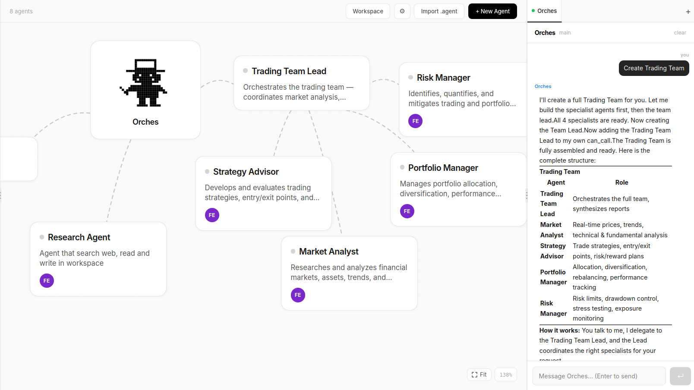

Build teams of AI agents that collaborate, delegate tasks, use tools, and produce results — all from a visual interface.

From a single agent answering questions to a full team researching, writing, and shipping.
See your entire agent network in a live, interactive graph. Watch tasks flow between agents in real time.
Agents delegate tasks to specialized sub-agents. The main agent coordinates, sub-agents execute. Configurable depth.
Agents read and write files in a shared workspace. Upload files in chat, open results directly in Canvas.
Agents present results as rich pages — Markdown, code, tables, charts, and a live browser — all inside the UI.
Connect any MCP-compatible service — GitHub, Notion, Linear, databases, and more — and make those tools available to agents.
Agents remember context across sessions. Auto-summarization keeps history compact without losing important context.
Schedule agent tasks with cron expressions or one-time datetimes. Works on SQLite and PostgreSQL equally.
Ask the main agent to build a team. It creates, configures, and registers new agents using the create_agent tool.
Add API keys from any provider through the UI. Assign different models to different agents. Keys never touch git.
Switch providers per-agent. Mix and match models based on cost, speed, or capability.
Two ways to run Orches — Docker for the easiest experience, or local with start.sh.
git clone https://github.com/ysz7/orches.git && cd orches
Docker: docker compose up --build → open localhost:8000
Local: ./start.sh → open localhost:5173
No database setup. SQLite is used by default.
Go to Settings → API Keys, pick a provider, paste your key. That's it.
Type a message to the main agent. Ask it to research, write, create other agents, or use tools.